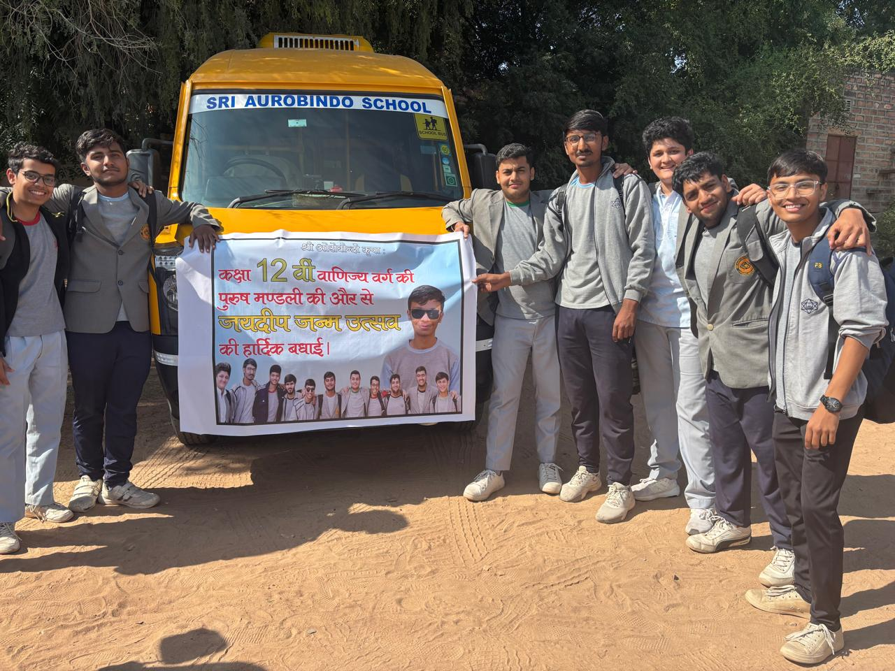
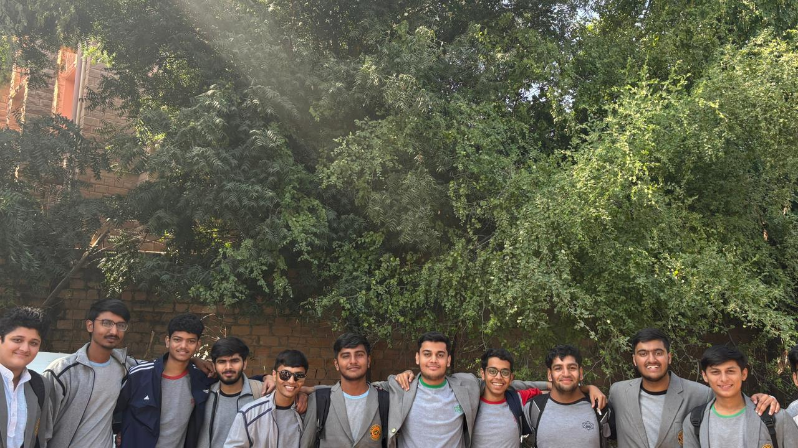
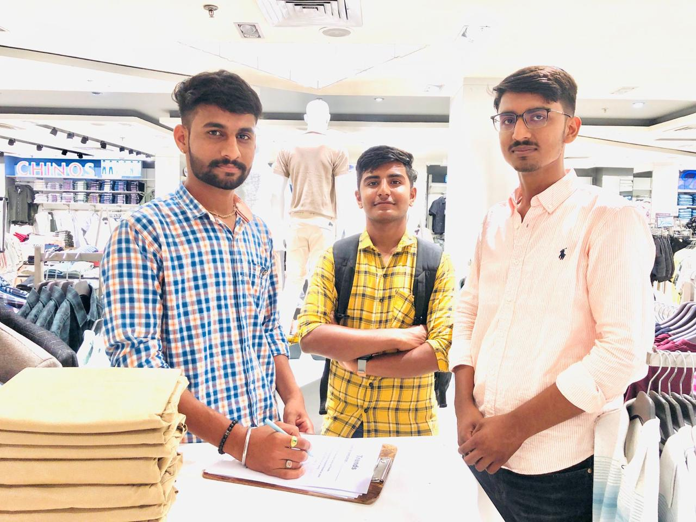
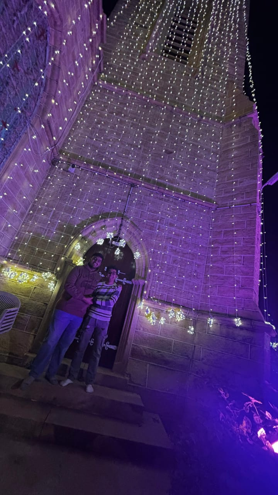
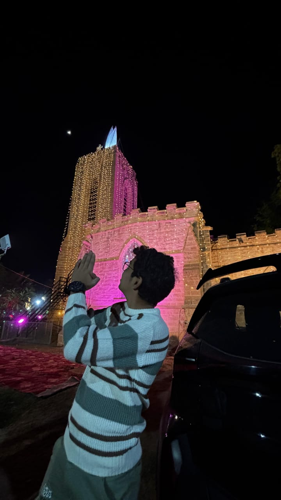
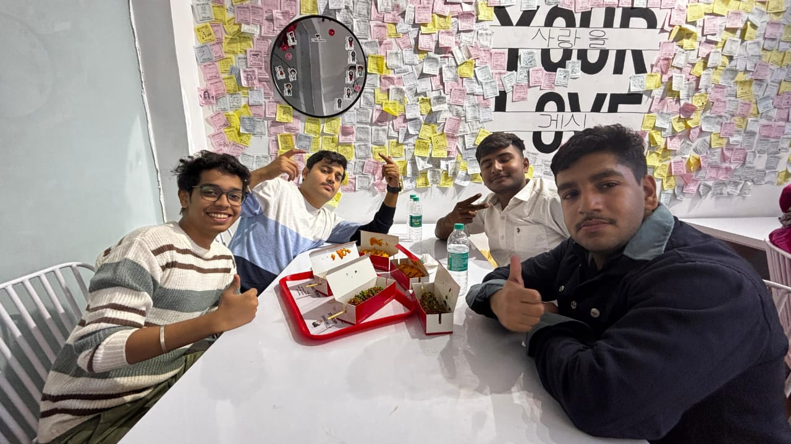
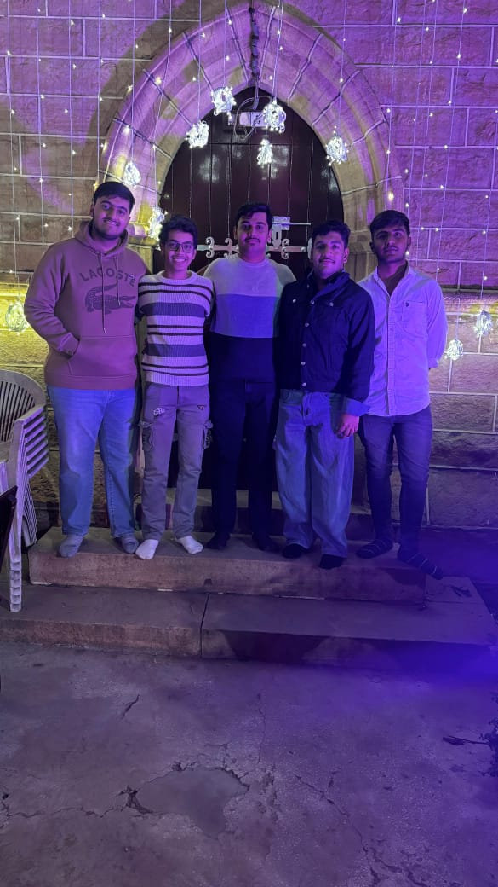
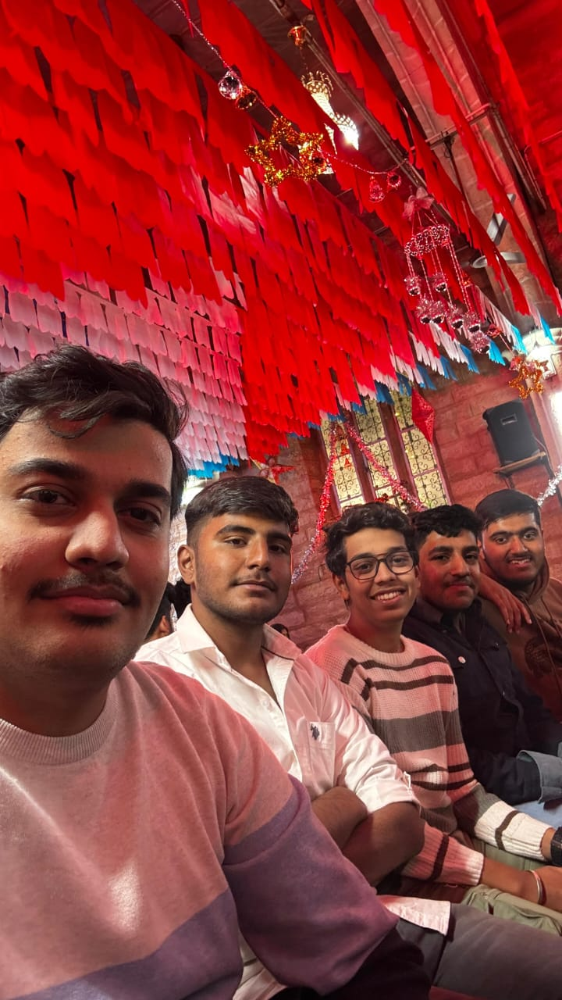

Due to increasing robbery and crimes at school parking ,BJP President and other members attend meeting at school parking.The objective of this meeting is to Collect Money and Timepass


A Great iniciative was taken by President Aman Sankhla and Member Danish Khan to protect Mines from Nature . this iniciative was result to increase mining in jodhpur and jodhpur became attraction of international investors.According to Experts Aman also says that mines and minereals are the heartbeat of Business and Industries


A big Celebration was taken place on the birthday of our director Sir jaydeep kachawah,Accordind to Aman, Jaydeep birthday was not an normal birthday ,it is a utsava for born of Great man like Jaydeep and aman named his birthday as "Jaideep Janmautsava"



Due to increasing exploitation of zudio employees ,Aman (President) and Danish (Member) visit Zudio to talk to employees and convence Manager .Aman 's Voice plays a great impact in changes of zudio 's policies.


According to sources , Mukesh Ambani(Chairman of Relience group of industries) directly contact to Aman ,to survey and find the reason why Trends is not earning profits like Zara.



Celebrations on Naman's wedding,According to experts Aman say naman's wedding as NNN(NAMAN NA*** November)


Aman and group stablishes root of secularism in india by visiting church




